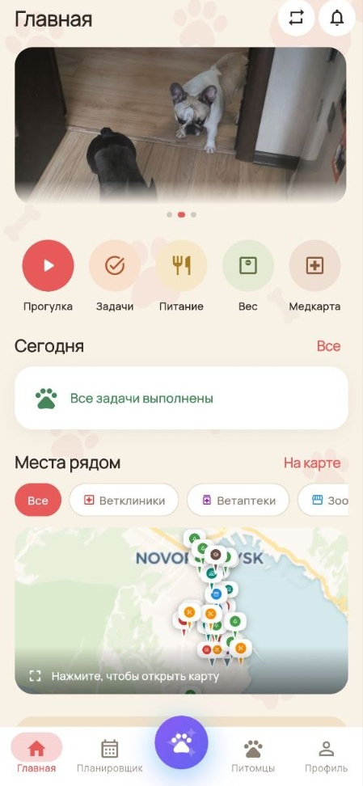
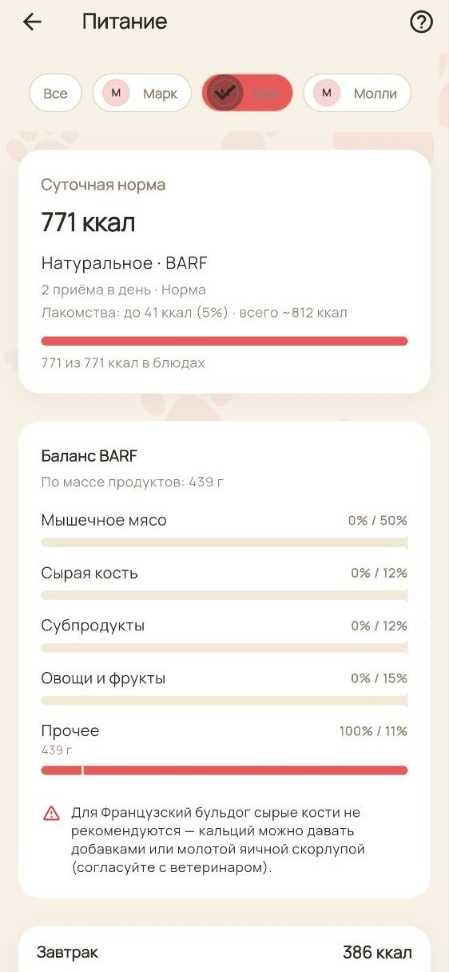
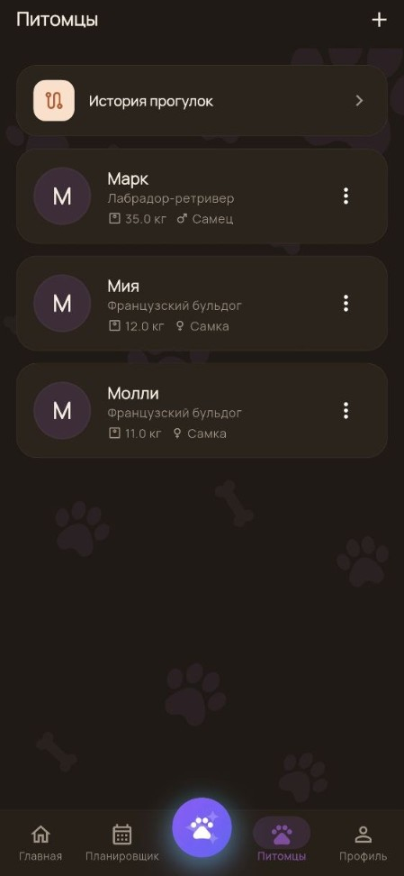
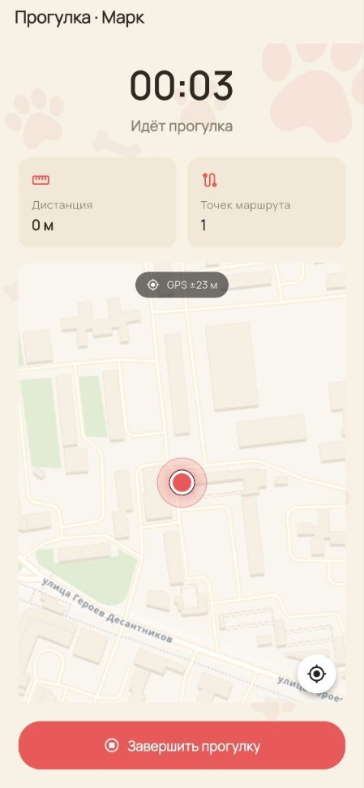
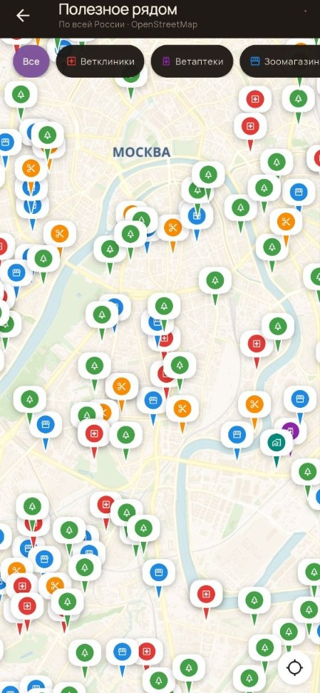
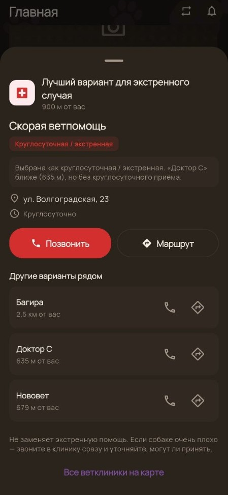

1. Контекст и проблема
Уход за собакой — это не просто выгул раз в день, а множество регулярных рутинных задач: график вакцинаций, обработка от клещей и глистов, учет веса, балансировка натурального питания или подсчет порций сухого корма. Большинство приложений на рынке страдают от трех проблем: они перегружены платной подпиской, требуют постоянного скоростного интернета (что на прогулках в парках часто недоступно) или не поддерживают ведение нескольких питомцев в одном профиле.
Цель проекта: сделать автономное, быстрое и надежное приложение, хранящее все данные в безопасности, но функционирующее полноценно даже без связи.
2. Архитектура и технические решения
Офлайн-ориентированность (Offline-first)
Приложение спроектировано так, чтобы владелец собаки не зависел от качества мобильной сети:
- Кеширование данных: Cloud Firestore настроен с локальной персистентностью. Задачи на день, профили собак и история прогулок доступны мгновенно при холодном старте.
- Локальные фото прогулок: медиафайлы с прогулок сохраняются в локальном хранилище устройства, не расходуя трафик и облачную квоту пользователя.
- Локальные уведомления: напоминания о кормлении, таблетках и приеме ветеринара планируются через модуль
flutter_local_notificationsна системном уровне устройства, поэтому срабатывают даже при выключенном интернете и в авиарежиме.
Питание и калькулятор BARF
Один из самых сложных модулей — расчет рациона:
- Поддержка как готовых кормов с расчетом суточной калорийности по формуле энергетической потребности (RER/MER), так и системы натурального питания BARF (Biologically Appropriate Raw Food).
- Калькулятор автоматически разбивает суточный рацион на доли: мышечное мясо, мясокостное, субпродукты (печень и другие органы), овощи и клетчатку с учетом возраста, веса и активности питомца.
Картография и экстренная помощь (SOS)
Интеграция с OpenStreetMap и геопозиционированием устройства:
- Отображение близлежащих дог-френдли локаций: ветеринарных клиник, круглосуточных аптек и зоомагазинов.
- Режим «Скорая помощь»: в один клик определяет ближайшую открытую круглосуточную ветклинику, позволяет немедленно набрать номер регистратуры и строит кратчайший автомобильный или пеший маршрут.
Умные прогулки и локальный помощник
- Трекинг времени выгула с фиксацией точек маршрута и фотодневником моментов.
- Контекстный помощник, анализирующий локальные данные карточки питомца (породу, возраст, склонности к аллергии, вес) и дающий рекомендации без отправки личных данных на внешние LLM-серверы.
3. Галерея экранов приложения

Главный экран: задачи на день, статус питомцев, ближайшие места.

Питание: расчет калорийности, соотношение BARF по категориям.

Питомцы: карточки нескольких собак в аккуратной темной теме.

Прогулка: таймер, точка на карте, сохранение фотоотчета.

Карта: ветклиники, аптеки и магазины по данным OpenStreetMap.

SOS-карточка: ближайшая дежурная ветклиника со звонком и маршрутом.
4. Итоги и результаты
Разработано готовое к публикации кроссплатформенное приложение с чистой модульной архитектурой на Flutter. Реализована строгая валидация ввода, поддержка системной темной и светлой темы, и полная независимость от постоянного сетевого подключения.